Verified slide provenance
Real AiiDA nodes and links, styled by render_provenance.py. Click a diagram for its SVG.
01: multiply_add_workchain (root PK 5)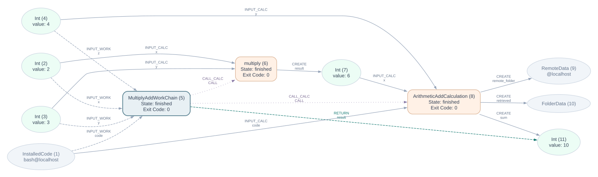
02: multiply_add_graph (root PK 15)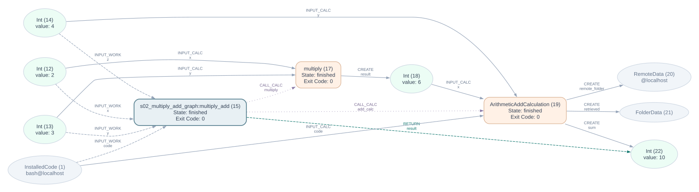
03: with_context (root PK 25)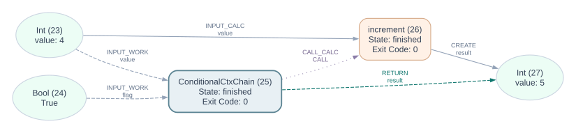
03: missing_context (root PK 30)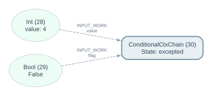
05: flag_true (root PK 33)
05: flag_false (root PK 40)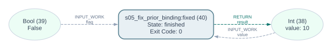
06: flag_true (root PK 44)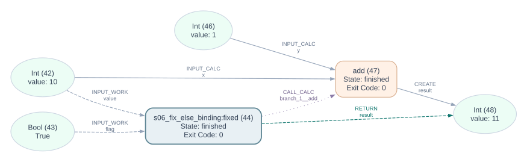
06: flag_false (root PK 51)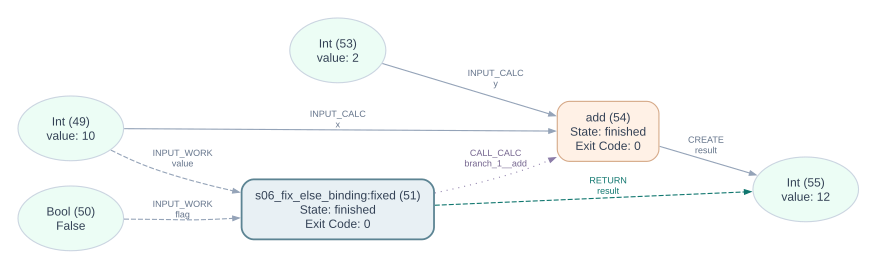
07: multiply_add_task (root PK 59)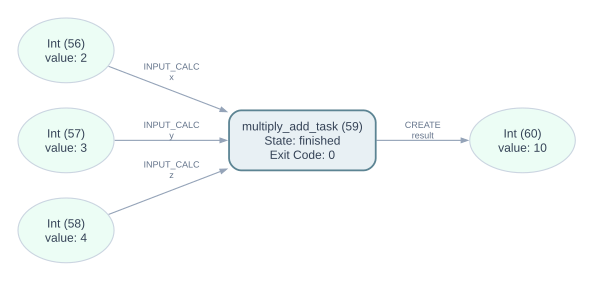
08: stored_inline (root PK 64)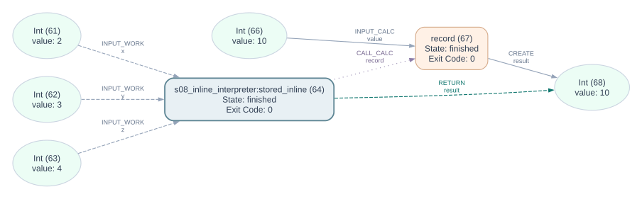
09: finite_mean (root PK 70)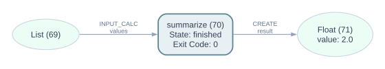
10: finite_mean (root PK 73)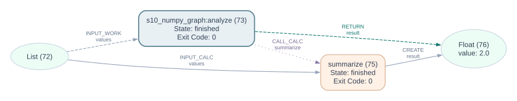
11: calculate (root PK 80)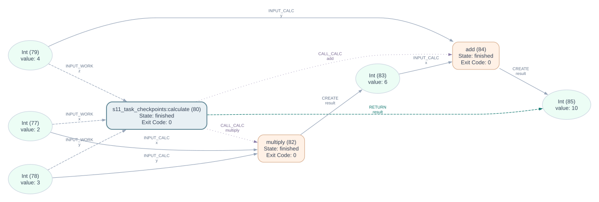
12: calculate (root PK 89)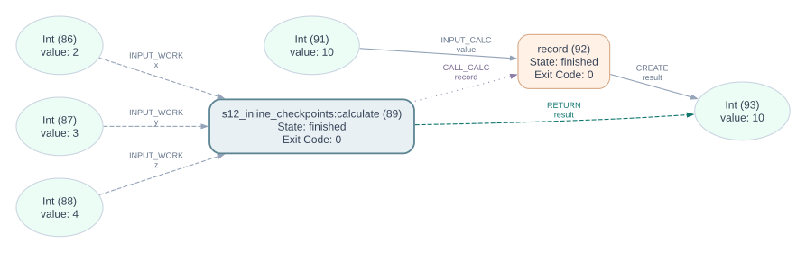
14: mean_expanded_volume (root PK 98)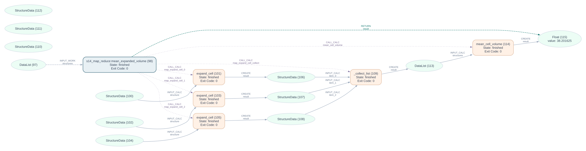
16: two_steps (root PK 118)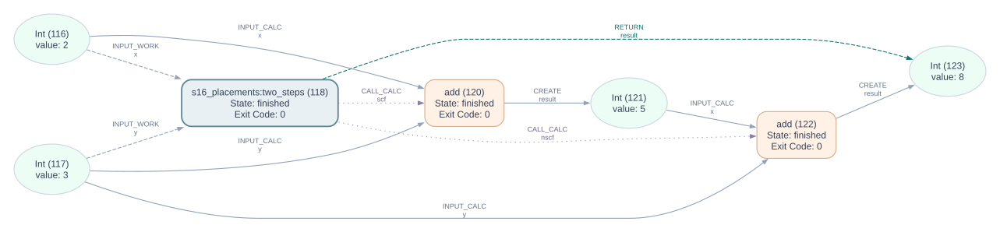
18: configured_defaults (root PK 127)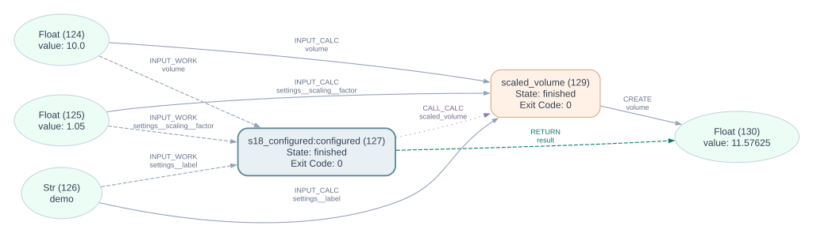
20: integrated (root PK 134)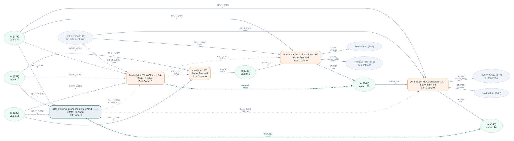
22: denominator_0 (root PK 149)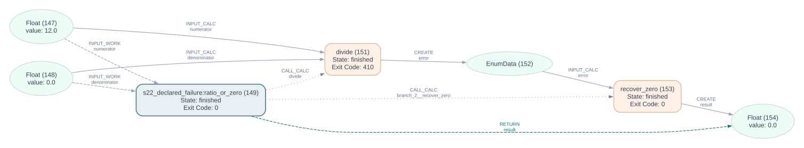
22: denominator_3 (root PK 157)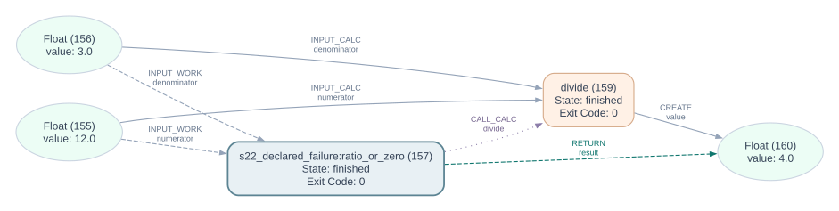
24: denominator_0 (root PK 164)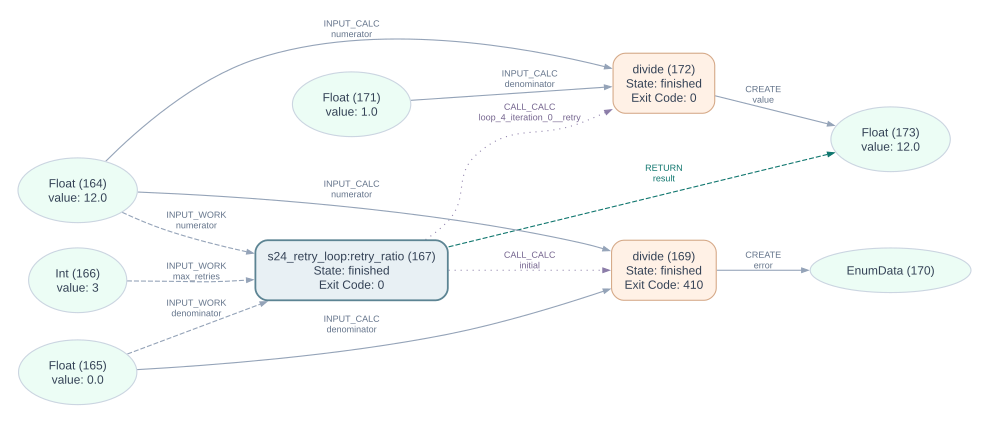
24: denominator_3 (root PK 176)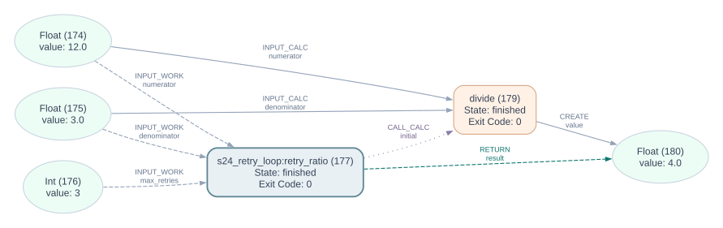
24: exhausted_budget (root PK 185)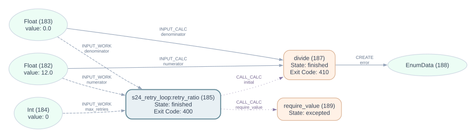
27: input_-2 (root PK 191)
27: input_2 (root PK 200)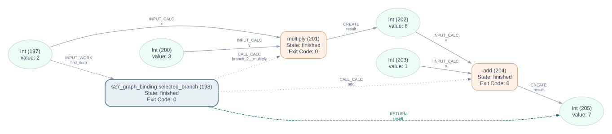
29: arithmetic_inline (root PK 211)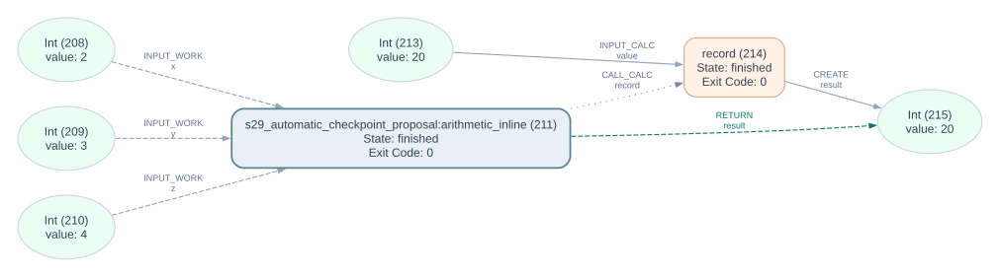
30: input_-2 (root PK 218)
30: input_2 (root PK 222)
31: input_-2 (root PK 226)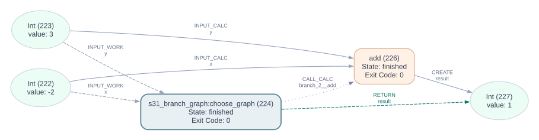
31: input_2 (root PK 232)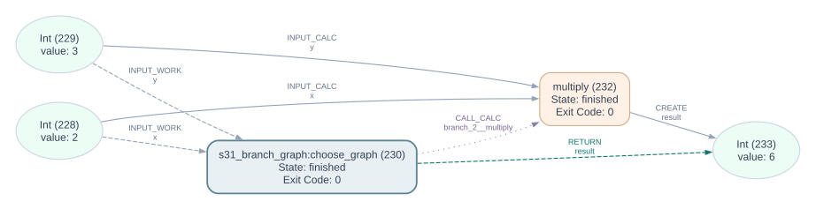
32: input_-2 (root PK 238)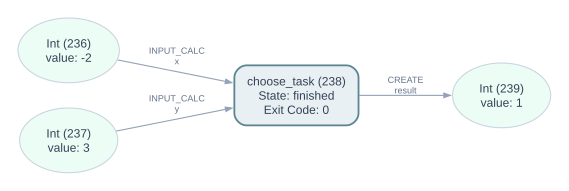
32: input_2 (root PK 242)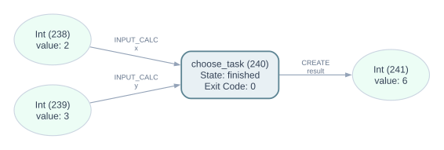
33: input_-2 (root PK 246)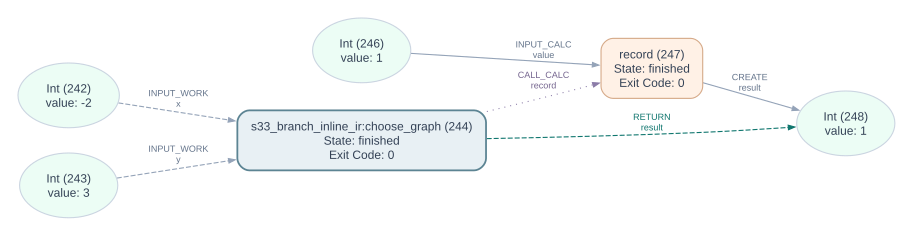
33: input_2 (root PK 253)
34: arithmetic_task (root PK 261)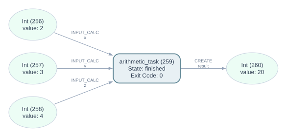
35: arithmetic_inline (root PK 266)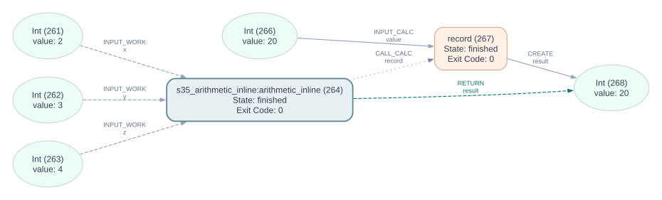